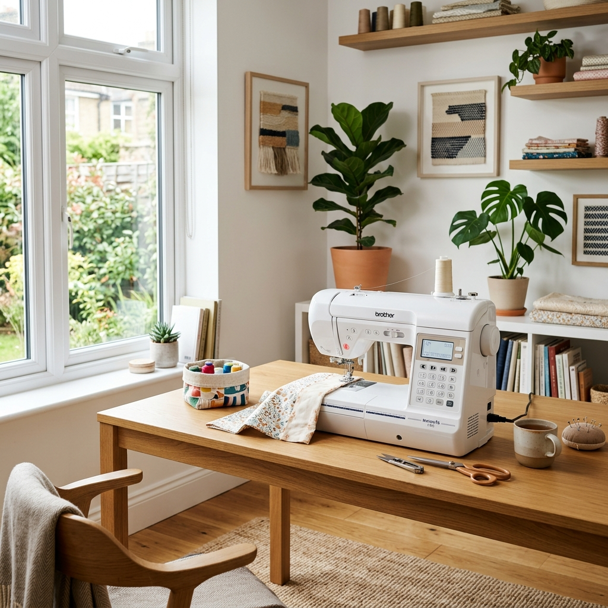

Our Story & Legacy
Bridging decades of manual precision engineering with modern digital systems to preserve Birmingham's finest repair heritage.
Craftsmanship at the Core
For over 35 years, DC Sewing Machines has stood at 1774 Pershore Road as a cornerstone of the Birmingham sewing community. Founded by Head Engineer Mr. Don Campbell, the shop built an impeccable reputation for resolving complex mechanical tolerances on industrial and domestic machines alike.
Whether servicing a mechanical Singer, timing a computerized Brother, or custom-fitting an overlocker, Don's workshop bench became a symbol of technical trust. Tailors, design students, and industrial clients knew their equipment was in the safest hands in the Midlands.

The Digital Next Chapter
As Mr. Campbell prepares for a well-earned retirement, we have structured a Digital Joint-Venture Partnership to preserve his engineering legacy. To make Don 100% hands-off from manual workbench stress, we have digitized store management and restructured repair operations.
The retail shelves have migrated online, and physical servicing is now outsourced to a network of certified 3rd-party mobile engineers. This transition allows Don to step back completely, while the ground-floor space is leased to local commercial operators, maximizing the real estate value of the property.

Legacy Milestones
Chronological milestones of DC Sewing Machines.
1980s: The Foundations
Don Campbell completes advanced mechanical engineering credentials, specializing in industrial loopers and thread tension mechanics.
1990s: Pershore Road
DC Sewing Machines opens its doors at 1774 Pershore Road, Birmingham, quickly becoming the region's premier repair workshop.
2026: Digital JV Model
The brand transitions to a digital e-commerce model. Operations are automated, and servicing is outsourced to certified 3rd-party networks, securing 100% owner freedom.